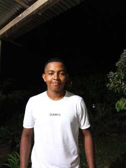
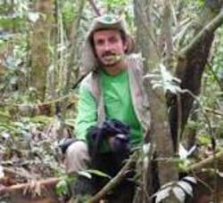
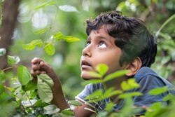

Andres Felipe Arrieta Montes

"La naturaleza no necesita al ser humano, pero el ser humano sí necesita de la naturaleza.
Sobre mi
Hola, soy Andres Felipe Arrieta Montes, estudiante de Biología en la Universidad de los Andes. Me apasiona la biodiversidad y la conservación del medio ambiente.
Me gusta aprender sobre diferentes especies y su importancia en los ecosistemas.
En mi tiempo libre disfruto de la fotografía de naturaleza y el senderismo.
Proyectos
Guardianes del Bosque

Iniciativa digital enfocada en la concientización ambiental y la promoción de la reforestación. Ofrece artículos, videos y campañas para proteger los ecosistemas forestales y empoderar a jóvenes como defensores del medio ambiente.
ExploraNaturaleza

Proyecto educativo que busca difundir el conocimiento sobre la biodiversidad de Colombia a través de una plataforma web interactiva. Incluye fichas informativas de especies, mapas ecológicos y recursos visuales para estudiantes y curiosos de la naturaleza.
Habilidades
- Conocimiento en biodiversidad y conservación
- Fotografía de naturaleza
- Trabajo en equipo
- Comunicación efectiva